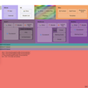

<!DOCTYPE html>
<meta charset=utf8>
<title>Structured Start Tab Options</title>

<style>
  @import url("style/vars.css");
  @import url("style/options.css");
</style>

<header>
  <h1> SST: Structured Start Tab</h1>
</header>

<main>

  <div>
    <input id=showBookmarksSidebar type=checkbox>
    <label for=showBookmarksSidebar>Include a sidebar of most recent bookmarks.</label>
  </div>

  <div>
    <input value=10 type="number" id="showBookmarksLimit">
    <label for=showBookmarksLimit>Number of recent bookmarks to show.</label>
  </div>

  <div>
    <textarea rows=10 cols=80 id="html">Config goes here...</textarea>
    <label for=html>Configuration</label>
  </div>

  <button id="save">Save</button>

<div id="status"></div>
</main>

<script type=module src="./js/options-start.js"></script>
